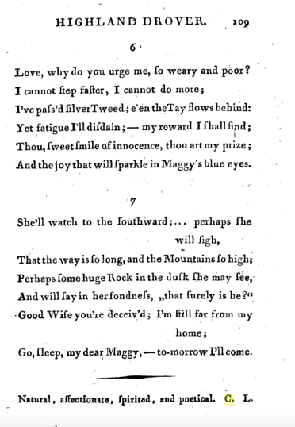

Byron on the Bloomfields, by Tim Fulford
In his 1809 poem English Bards and Scotch Reviewers, the young Lord Byron cut his satirical teeth on Robert Bloomfield, his brother Nathaniel, and their editor/patron Capel Lofft. Mastering Pope’s techniques for inducing bathos, Byron targeted the fact that the Bloomfields’ poetry came from men whose trade was manual labour (Robert was a poor ladies’ shoemaker; Nathaniel was a tailor).
When some brisk youth, the tenant of a stall
Employs a pen less pointed than his awl,
Leaves his snug shop, forsakes his store of shoes,
St. Crispin quits, and cobbles for the Muse,
Heavens! how the vulgar stare! how crowds applaud!
How ladies read, and Literati laud!
If chance some wicked wag should pass his jest,
'Tis sheer ill-nature—don't the world know best?
Genius must guide when wits admire the rhyme,
And CAPEL LOFFT declares 'tis quite sublime.
Hear, then, ye happy sons of needless trade!
Swains! quit the plough, resign the useless spade!
Lo! BURNS and BLOOMFIELD, nay, a greater far,
GIFFORD was born beneath an adverse star,
Forsook the labours of a servile state,
Stemmed the rude storm, and triumphed over Fate:
Then why no more? if Phœbus smiled on you,
BLOOMFIELD! why not on brother Nathan too?
Him too the Mania, not the Muse, has seized;
Not inspiration, but a mind diseased:
And now no Boor can seek his last abode,
No common be inclosed without an ode.
Oh! since increased refinement deigns to smile
On Britain's sons, and bless our genial Isle,
Let Poesy go forth, pervade the whole,
Alike the rustic, and mechanic soul!
Ye tuneful cobblers! still your notes prolong,
Compose at once a slipper and a song;
So shall the fair your handywork peruse,
Your sonnets sure shall please—perhaps your shoes.
(lines 765-94)
Byron aims to undermine their poetry’s claims to literary merit by collapsing literary art into workman’s craft – the labour of the mind into the labour of the body. It’s a brilliantly done snooty appeal to class condescension at the pretensions of the unpolished, poorly educated artisan writer. Keats would later meet the same snobbish belittlement at the hands of John Wilson Croker. Behind the jokes at cobbler-poets’ expense, Byron has a larger target in mind. His wit is mostly directed not so much at the authors as at polite readers who won’t hear any criticism of the new fashionable authors – fashionable less because of their works’ merits than because they are phenomena, as labourers who have written verse. It’s the condescension and tokenism of this that Byron pokes fun at, because he views it as indiscriminate. Like Burns and Gifford – two authors from humble backgrounds whom Byron greatly admired – Robert Bloomfield may have ‘triumphed’ over the ‘fate’ that made him a manual worker of little education, but the current fashion for labourer poets means that his brother Nathaniel – whom Byron regards as talentless – is also admired. Byron sees this fashion as an example of the feminisation and sentimentalisation of taste: he blames women readers (‘the fair’) for approving of ‘poor boy’ poets just as they would a nice pair of shoes. Thus Capel Lofft, the Bloomfields’ editor, is mocked as a less-than-masculine figure for scattering his own fulsome comments over their texts:
Genius must guide when wits admire the rhyme,
And CAPEL LOFFT declares 'tis quite sublime.
Here ‘quite sublime’ alludes to the notes that Lofft wrote and insisted must be placed at the bottom of the pages of Robert’s Rural Tales (1802), much to the author’s chagrin. These attracted widespread ridicule since they consisted of nothing except vapid praise, revealing Lofft as a girlish ingenue and a latterday Polonius. Here’s an example:

Bloomfield fought hard to have the notes removed from later editions – and succeeded – but not in time to prevent responses such as Byron’s here. In a footnote, Byron rammed his feminisation point home. Lofft, he wrote, was a man midwife – hardly a macho role – assisting the naïve poets to give birth to their literary offspring: ‘the Mæcenas of shoemakers and Preface-writer-General to distressed versemen – a kind of gratis Accoucheur to those who wish to be delivered of rhyme but do not know how to bring it forth’. For Byron, Lofft presided over a debased, feminised taste that collapsed literary merit into commodified sentiment. In making this attack, however, Byron reveals his disdain for poetry that utters what to him are the petty and commonplace concerns of ordinary people. Nathaniel’s elegy on the enclosure of Honington Green (a poem proleptic of John Clare’s laments about the effects of enclosure on villagers’ physical and mental health) is summarised thus:
And now no Boor can seek his last abode,
No common be inclosed without an ode.
Byron has no sympathy for the vulnerable lives and local viewpoints of the poor – not, at least, as subjects for poetry - a limitation highlighted both by Wordsworth (himself targeted by Byron in Don Juan for just this sympathy) and, on Nathaniel's behalf, by George Bloomfield.